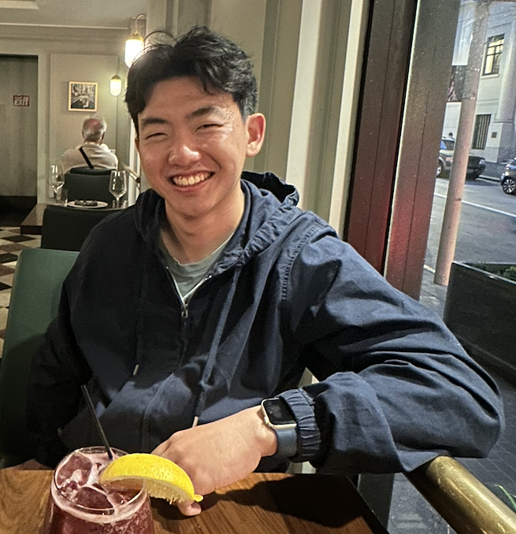

Statistics @ Yale

Intuition is my north star. Most of what I do begins with a need to understand something so strange I can’t stop thinking about it.
I love statistics because it turns seemingly indecipherable systems into patterns we can interpret, test, and act on.
I built Infodemica, a video-generation tool for medical journals backed by Yale’s Tsai CITY and Sustainable Health Initiative, to make dense scientific knowledge easier to grasp. I’m also constantly building and shipping small tools that help me understand the world around me, including an AI research agent that gathers articles, journal papers, and social media posts, explains key insights, and synthesizes reading into a digital commonplace book. Stay tuned for more!
I’ve worked at the Yale Institute of Network Sciences, Yale Youth Poll, and Cornerstone Research, with my work being featured in the New York Times.
My creative inspirations include Clarice Lispector and Marcel Proust.